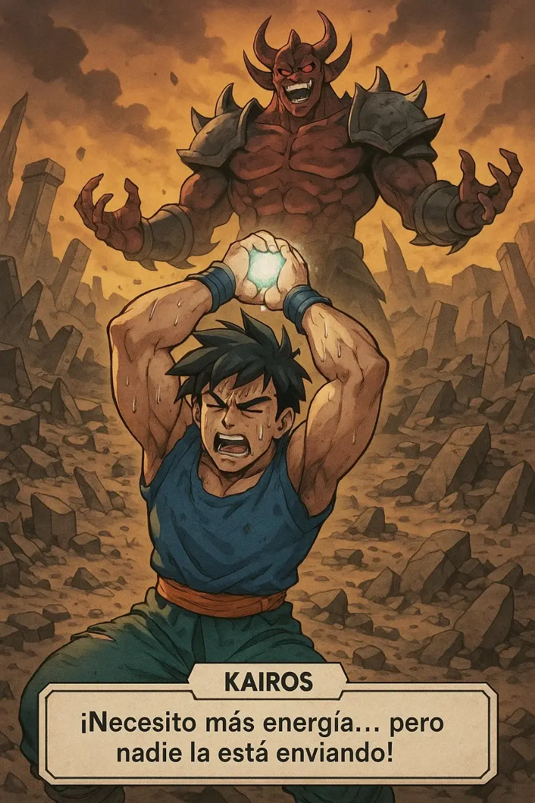
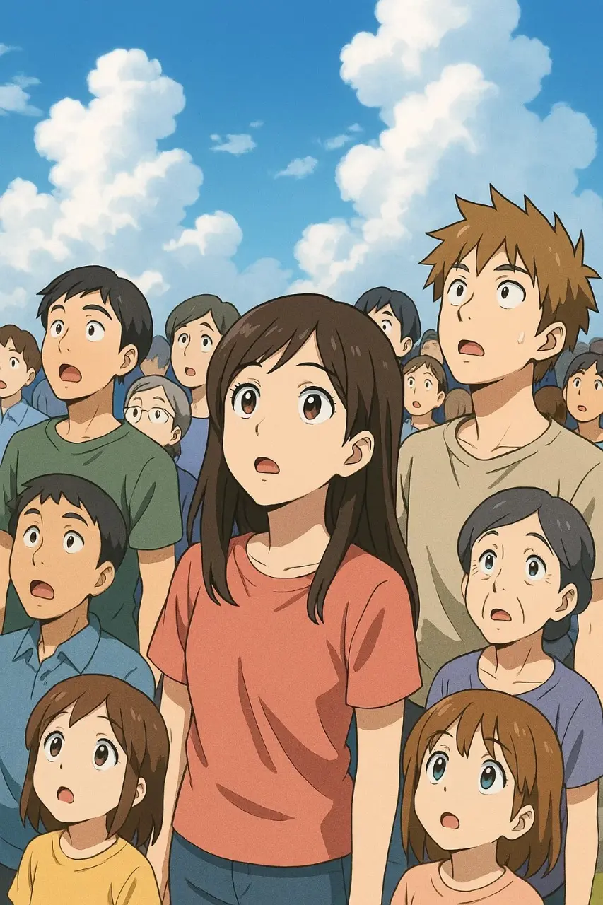
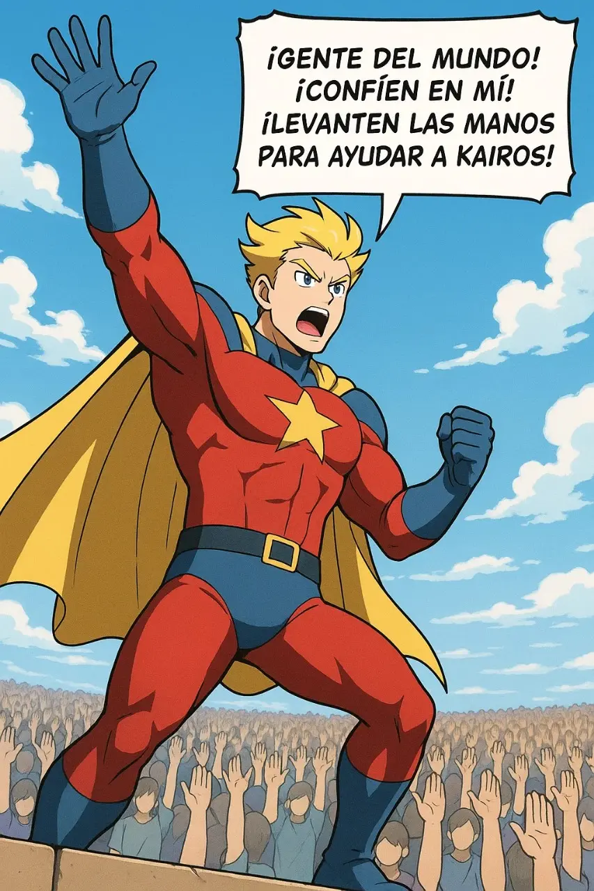
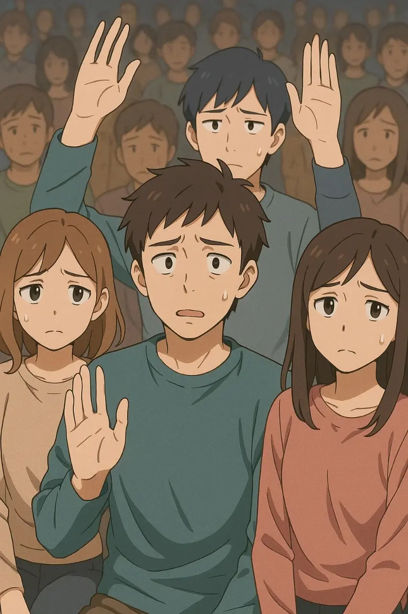
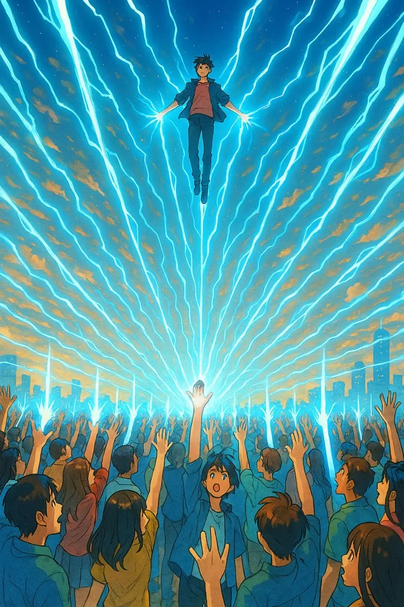
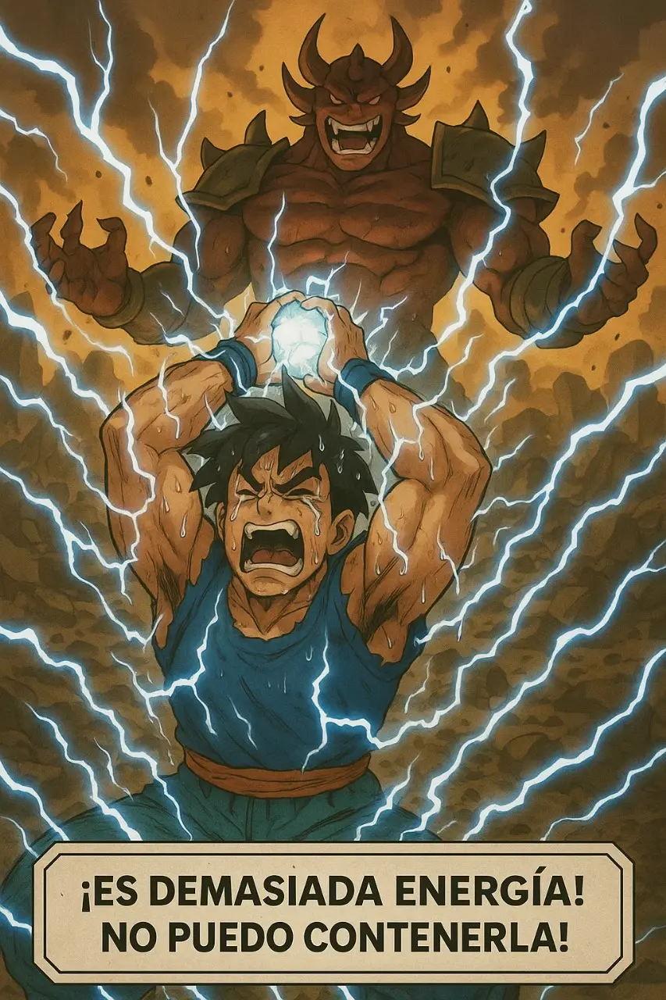
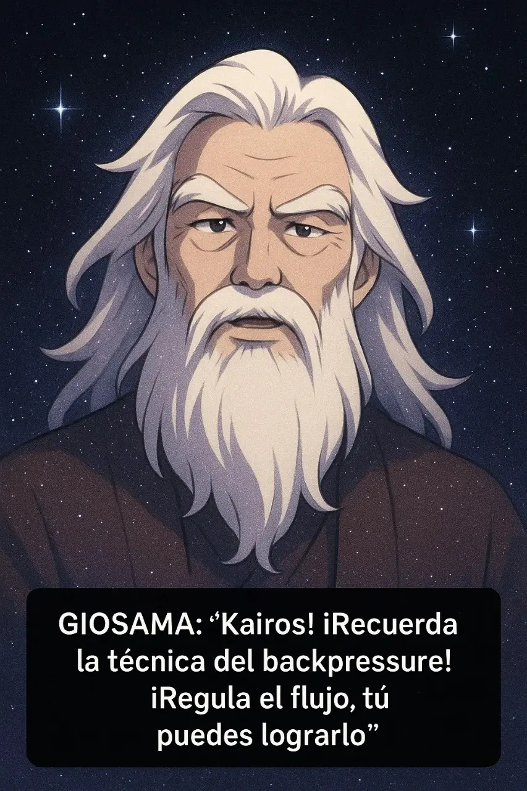
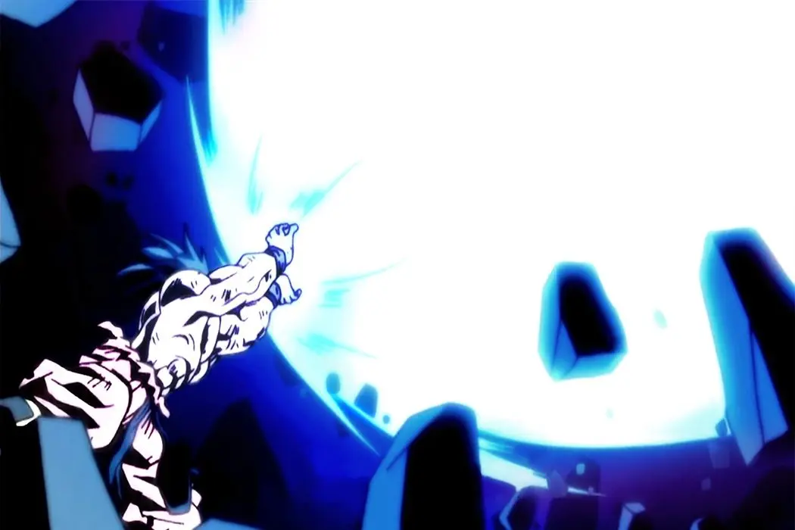

Un enfoque creativo para comprender la programación reactiva
La programación reactiva a menudo se presenta con terminología compleja y abstracciones difíciles de visualizar. Esta historia es un intento de transformar conceptos técnicos en una narrativa visual y emocionante que cualquiera pueda entender. A veces, la mejor manera de aprender no es a través de documentación técnica, sino mediante metáforas que conecten con nuestra imaginación.

El malvado Lord Caos ríe mientras todo yace destruido a su alrededor. En lo alto, el héroe Kairos, con sus manos alzadas, intenta formar la Energidama, una esfera de energía pura nacida de la colaboración mundial.
KAIROS (jadeando): "¡Necesito más energía... pero nadie la está enviando!"

Una multitud de personas mira hacia el cielo, donde la batalla se desarrolla. Sus rostros muestran preocupación y duda ante la situación.
VOZ EN OFF (Narrador): "El mundo esperaba... pero el flujo era débil. Nadie confiaba."

Desde una plataforma elevada aparece Capitán Nova, el héroe mediático, dispuesto a cambiar la situación con su capacidad de inspirar a las masas.
CAPITÁN NOVA (gritando): "¡Gente del mundo! ¡Confíen en mí! ¡Levanten las manos para ayudar a Kairos!"

Algunos ciudadanos comienzan a levantar sus manos tímidamente, pero la duda se refleja en sus rostros. No están completamente seguros de querer participar.
VOZ EN OFF: "Algunos enviaron energía dudosa, como un Maybe. Tal vez sí, tal vez no..."
Otros ciudadanos, con fe inquebrantable, alzan sus manos sin vacilar. Su compromiso es total y su energía fluye directamente hacia Kairos.
VOZ EN OFF: "Otros enviaron un Single: una única chispa, directa y llena de fe."

De repente, la energía comienza a fluir desde todos los rincones del planeta. Millones de personas levantan sus manos, creando corrientes de energía que se dirigen hacia Kairos.
VOZ EN OFF: "Y entonces... se desató el Flowable: un torrente continuo de energía de todos los rincones del mundo."

Kairos comienza a temblar, su cuerpo se sacude mientras intenta contener la inmensa cantidad de energía que ahora fluye hacia él.
KAIROS (gritando): "¡Es demasiada energía! ¡No puedo contenerla!"

Entre las estrellas aparece la figura sabia del Maestro Giosama, observando la situación y listo para compartir su conocimiento ancestral.
GIOSAMA: "¡Kairos! ¡Recuerda la técnica del backpressure! ¡Regula el flujo, tú puedes lograrlo!"
Kairos respira profundamente, aplica la técnica y comienza a equilibrar el flujo de energía. La Energidama se estabiliza y brilla con intensidad controlada.
VOZ EN OFF: "Con calma y sabiduría, aplicó backpressure, equilibrando el torrente con maestría."

Con un movimiento poderoso, Kairos lanza la Energidama perfectamente formada hacia Lord Caos. La esfera brilla con el poder combinado de la humanidad.
KAIROS: "¡Este es el poder de la programación reactiva universal!"
// ESCENA 4: Primeros impulsos (Maybe)
import io.reactivex.Maybe;
public class MaybeExample {
public static void main(String[] args) {
// Un ciudadano indeciso puede enviar energía o no
Maybe.fromCallable(() -> {
boolean decidoAyudar = Math.random() > 0.5;
return decidoAyudar ? "Energía enviada con dudas" : null;
})
.filter(energia -> energia != null)
.subscribe(
energia -> System.out.println("Kairos: ¡Recibí energía: " + energia + "!"),
error -> System.out.println("Error: " + error.getMessage()),
() -> System.out.println("Kairos: No recibí energía de este ciudadano...")
);
}
}
Maybe: Representa a los ciudadanos indecisos. Puede emitir un único valor o simplemente completarse sin emitir nada.
// ESCENA 5: Energía firme (Single)
import io.reactivex.Single;
public class SingleExample {
public static void main(String[] args) {
// Un seguidor fiel siempre envía su energía
Single.just("Energía pura y concentrada")
.map(energia -> energia + " (fuerte)")
.subscribe(
energia -> System.out.println("Kairos: ¡Recibí energía firme: " + energia + "!"),
error -> System.out.println("Error: " + error.getMessage())
);
}
}
Single: Representa a los seguidores fieles. Siempre emite exactamente un valor, garantizado y sin falta.
// ESCENA 6: Reacción global (Flowable)
import io.reactivex.Flowable;
import java.util.concurrent.TimeUnit;
public class FlowableExample {
public static void main(String[] args) throws InterruptedException {
// Masas enviando energía continuamente
Flowable.interval(100, TimeUnit.MILLISECONDS)
.take(10) // Limitamos a 10 emisiones
.map(i -> "Energía #" + i + " desde región " + (char)('A' + i % 5))
.subscribe(energia ->
System.out.println("Kairos está recibiendo: " + energia)
);
// Esperamos para ver la salida
Thread.sleep(1500);
}
}
Flowable: Representa el torrente de energía de las masas unidas. Emite múltiples valores secuencialmente, potencialmente infinitos.
// ESCENA 8-9: Controlando el flujo
import io.reactivex.Flowable;
import java.util.concurrent.TimeUnit;
public class BackpressureExample {
public static void main(String[] args) throws InterruptedException {
System.out.println("GIOSAMA: ¡Recuerda la técnica del backpressure!");
// Torrente masivo de energía que Kairos controla
Flowable.interval(10, TimeUnit.MILLISECONDS)
.onBackpressureBuffer(20) // Almacena hasta 20 elementos
.map(i -> "Energía masiva #" + i)
.observeOn(io.reactivex.schedulers.Schedulers.computation(),
true, // Habilitar backpressure
5) // Procesar máximo 5 a la vez
.doOnNext(e -> Thread.sleep(50)) // Simular procesamiento lento
.subscribe(
energia -> System.out.println("Kairos procesa: " + energia),
error -> System.err.println("Sobrecarga: " + error)
);
// Esperar a ver el proceso
Thread.sleep(1000);
System.out.println("Kairos: ¡Este es el poder del backpressure!");
}
}
Backpressure: La técnica del Maestro Giosama permite a Kairos controlar la velocidad a la que procesa el flujo de energía, evitando la sobrecarga.